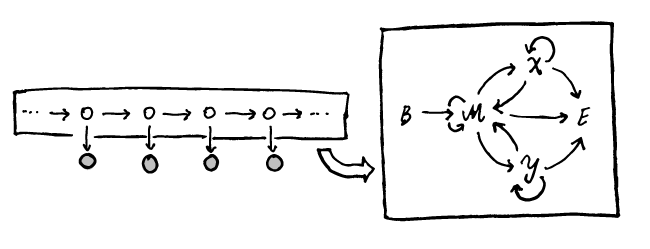

Pair hidden Markov models (pair HMMs, or pHMMs) were introduced, as far as I can tell, by Durbin et al. (1999), in what I heard veterans call ‘the Durbin book’ (Biological Sequence Analysis, or BSA). These are beautiful probabilistic models that can be used for model-based pairwise alignment of sequences. As I was studying these, it seemed worthwhile to write down some notes, since the subject turned out to be somewhat more difficult than I thought (as a matter of fact, I thought I already understood how pHMMs worked, but that turned out to be only partly true when I actually needed one).
An ordinary hidden Markov model (HMM) is best understood by its probabilistic graphical model (PGM) representation
Recall that a PGM displays conditional dependence relationships among random variables. White circles usually denote unobserved (‘latent’) variables, whereas grey circles denote observed (‘clamped’) variables. In the above PGM, the white nodes display the ‘hidden’ states, which form a Markov chain, each variable being conditionally dependent on the preceding one. With each hidden state \(Z_i\), one random variable \(X_i\) with law \(X_i|Z_i \sim f\) conditionally dependent on the hidden state is associated, a realization of which constitutes the observed data. Clearly, such a probabilistic structure could be used to model a time series or a (biological) sequence (for instance). The probability law generating the observations conditional on the hidden states is often called the ‘emission model’. A classical example would be a model for some DNA sequence, where hidden states \(Z_i\) could for instance correspond to whether or not a position \(i\) is in (\(Z_i = 1\)) or not in (\(Z_i = 0\)) a CpG island. The emission model would correspond to a multinomial probability law with parameter \(\theta_i\) depending on the hidden state. After specifying the transition probabilities \(p_{ij} = \Pr(Z_{i+1} = i|Z_i =j)\) for hidden states and the emission model \(\theta_i|Z_i\), simulating from the HMM as a generative model is straightforward.
A first thing to stress is that a pair HMM is au fond just a HMM: a pair HMM has the same PGM as the one sketched above. There are however two aspects to pair HMMs and their use for probabilistic alignment which complicate things:
Honestly, the first aspect is what brought about some initial confusion, as I was used to looking at PGM diagrams, and got confused by the graphical display of the Markov chain (which is also depicted as a directed graph) underneath the hidden state part of the PGM, somehow trying to fit it in the PGM view. Specifically, the following two graphs depict two intimately related aspects of a pair-HMM

On the left side we of course have the same PGM as above, but where I put a box around what we have called the hidden nodes. On the right hand side, the Markov chain which governs the different states taken by the hidden nodes is displayed. So in this model, each hidden node takes a value from the set \(\{B,M,X,Y,E\}\), where transitions are allowed between neighboring states in the Markov chain.
The Markov chain over hidden states is determined by a transition probability matrix. In the above example this could for instance be
\[P = \begin{pmatrix} 0 & 1-2\delta -\tau & \delta & \delta & \tau \\ 0 & 1-2\delta- \tau & \delta & \delta & \tau \\ 0 & 1-\epsilon-\tau & \epsilon & 0 & \tau \\ 0 & 1-\epsilon-\tau & 0 & \epsilon & \tau \\ 0 & 0 & 0 & 0 & 1 \end{pmatrix}\]
with states ordered \((B,M,X,Y,E)\) this would correspond to the pHMM for a global alignment as defined in the Durbin book.